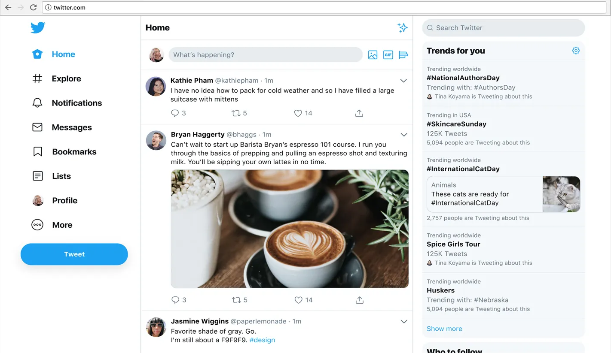

Assignment no.1
Visit a website that interests you. Get a screenshot of the home page or one other pertinent page from the site.
Create a single webpage to place the screenshot images of your chosen website and your answers to the following questions:
Home Page:

- What is the URL of the site?
- https://twitter.com/i/flow/login?input_flow_data=%7B%22requested_variant%22%3A%22eyJsYW5nIjoiZW4ifQ%3D%3D%22%7D
- What is the purpose of the site?
- Twitter is a platform that enables people to connect, share information, and express themselves in various ways.
- Who is the intended audience?
- The audience of Twitter is diverse, and the platform serves many different purposes. Such as Individuals: People who use Twitter to share their thoughts, interests, and opinions with a broader audience, celebrities etc.
- Do you think that the site reaches its intended audience? Why or why not?
- Yes, I believe that Twitter reaches its intended audience. Twitter has a massive user base, with over 330 million monthly active users as of 2021. The platform attracts a diverse range of users, from individuals to businesses, celebrities, politicians, and non-profit organizations. With its real-time nature and the ability to share information quickly and easily, Twitter has become an essential platform for news, information, and communication.
Twitter's features, such as hashtags and trending topics, make it easy for users to find and engage with content relevant to their interests. The platform's algorithm also tailors content to users based on their activity and preferences, ensuring that users see content that is most relevant to them.
- Is the site useful to you? Why or why not?
- For me Twitter is useful because it can help you relief your stress by ranting however, like any social media platform, Twitter can also have its downsides. It can be a source of negativity, with some users using it to spread hate and harassment. Additionally, the platform can be addictive, and users may find themselves spending too much time on it.
- Does this site appeal to you? Why or why not? Consider the use of color, images, multimedia, organization, and ease of navigation.
- Yes it appeal on me because Twitter's design and user interface are well-executed, with a simple yet effective use of color, images, multimedia, and organization. The platform's ease of navigation makes it easy to use, even for new users, and enhances the user experience.
- Would you encourage others to visit this site? Why or why not?
- For me it depends on the person whether or not to encourage someone to visit Twitter depends on their interests and goals. If someone is interested in real-time news and information, networking, entertainment, or self-expression, then Twitter could be a useful platform for them. It can be a valuable source of information and provide opportunities for networking and connecting with like-minded individuals.
- How could this site be improved?
- In my opinion, to improve Twitter is a well-established platform, there are still areas for improvement. By addressing some of these issues, Twitter could enhance the user experience and maintain its position as a valuable platform for news, information, networking, entertainment, and self-expression.